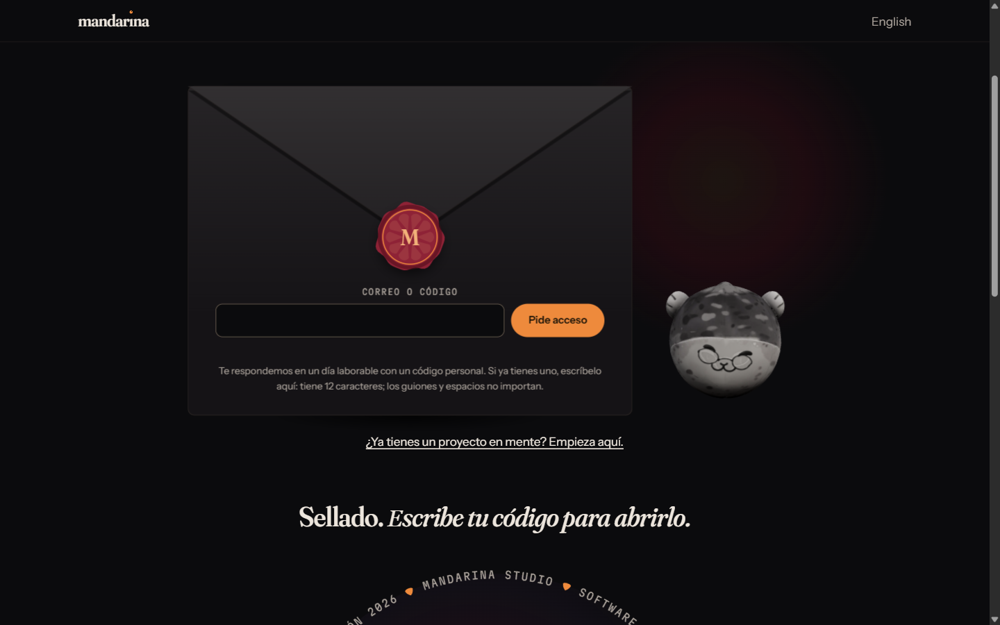
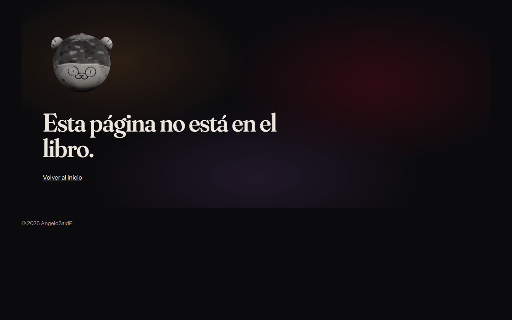
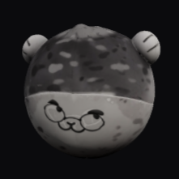
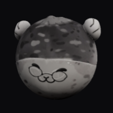
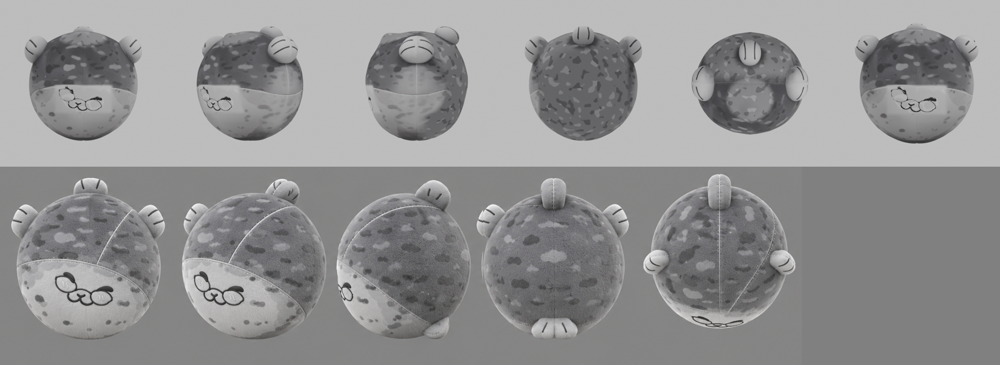
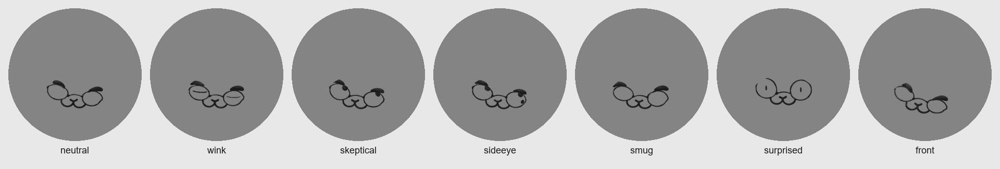

Foca, viva
Foca ya está en Acceso, junto al sobre, y en la página 404. Es un modelo 3D: TRELLIS hizo la base desde tu hoja de vistas, y la reparamos en Blender (redonda, sin la cola duplicada ni la segunda cara, la espalda repintada, las aletas con huesos). La cara es una capa aparte que cambia de expresión, recortada de tu hoja de expresiones. Sigue al puntero, respira, parpadea cada 2 a 6 segundos, pone cara de sospecha mientras escribes el código y aplaude con las aletas cuando se rompe el sello. En la 404 está sorprendida. Carga después de la página y solo cuando se ve; con movimiento reducido se queda quieta (la imagen fija) y el modelo no se descarga. Volver.
En Acceso: sigue al puntero, sospecha mientras escribes, aplaude al romperse el sello




El modelo junto a tu referencia

Las caras
